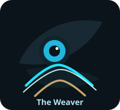
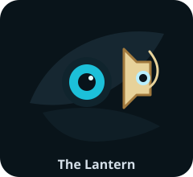

Archive
The journal records immutable history before anything else is inferred from it.
AETHER Documentation
AETHER is building a replayable, recursive, explainable coordination kernel. This portal now leans into a darker corvid visual language: sentinel intelligence, mechanical precision, temporal memory, and proofs that glow instead of hide.
The wardens below are teaching devices as much as mascots. Each one anchors a distinct job the kernel must perform correctly.
Pedagogy
The docs are meant to do more than index files. They teach the system in the order the system itself thinks, with a visual grammar that makes the roles memorable.
The journal records immutable history before anything else is inferred from it.
The resolver turns raw history into semantic state at `Current` or an exact `AsOf` cut.
The runtime composes recursive and stratified truths from the resolved state.
The explainer shows why the answer is true, not just that the system emitted it.
Meet The Wardens
The Aether wardens are not decoration pasted over the docs. They are mnemonic anchors for the four jobs the kernel must perform cleanly, with a tone closer to the system’s actual temperament.
Guards append-only history and reminds the reader that the journal comes first and does not forget.
Represents `Current` and `AsOf` resolution across the shape of time and the terrain of state.

Embodies recursive closure, SCC iteration, and the runtime’s work of composing truths under pressure.

Signals proof traces, provenance, and the obligation to show why an answer deserves trust.
Start Here
If you only have a few minutes, these are the documents that make the project legible quickly and accurately.
The thesis, current implementation line, and repository map.
HandbookThe reading map for developers, operators, and evaluators.
System ShapeHow the journal, resolver, compiler, runtime, explainer, and service fit together.
ShowcaseThe strongest current end-to-end story: replay, recursion, leases, fencing, and proof traces.
Published Surfaces
Generated automatically from the Rust workspace on every push to
main.
Human-written architecture, workflow, glossary, and operator guides anchored in the current codebase.
Open documentation hubOperator-facing walkthroughs and one-click launcher paths for the strongest demonstrations in the repository.
Open operator guideBest Showcase
If you need one demonstration that proves progress rather than merely claiming it, start with Demo 03.
Operator Path
Use the one-click Windows launcher or the direct Rust example, then keep the generated report as a presentation artifact.
Core Guides
Implementation Frontier